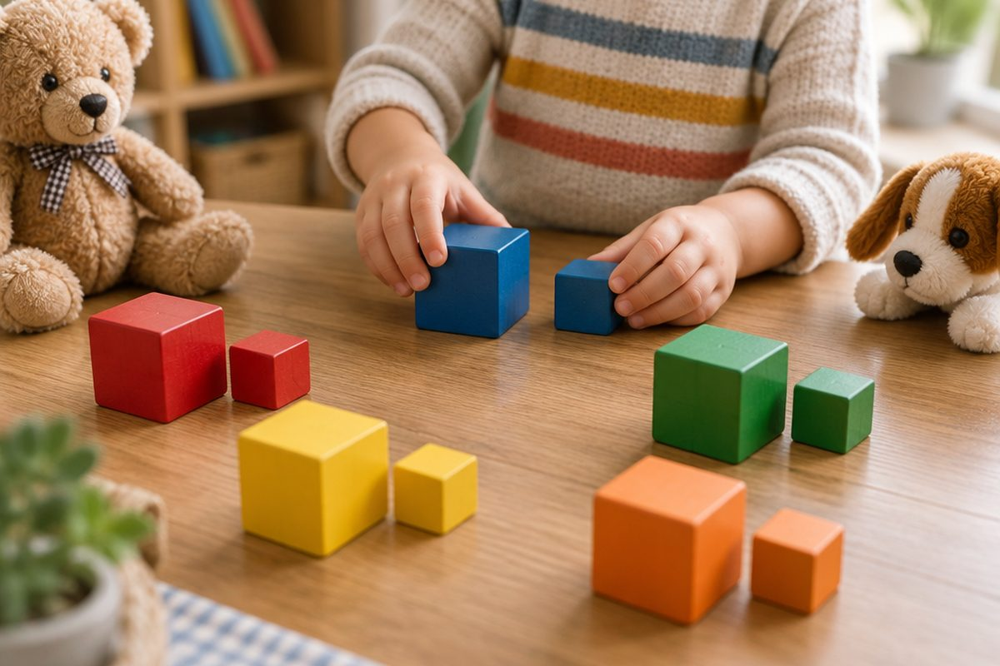

전체 단원 › 1학년 › 영어 › 1단계 · 대문자와 소문자
큰 글자 A와 작은 글자 a는 같은 친구일까?

알파벳은 모양이 두 가지예요. 큰 글자와 작은 글자를 만나요.
글자마다 두 모양이 있어요
큰 글자는 대문자예요.
작은 글자는 소문자예요.
A와 a는 이름이 같아요. 둘 다 '에이'!
A a · B b · C c · D d
모양이 닮은 짝
크기만 다른 짝이 있어요.
C와 c는 둘 다 동그라미 반쪽이에요.
O와 o는 둘 다 동그라미예요. ⭕
C c · O o · S s · U u · V v · W w · X x · Z z
모양이 다른 짝
모양이 많이 다른 짝도 있어요.
이런 짝은 눈으로 자주 봐요.
A a · B b · D d · E e · G g · Q q · R r
헷갈리는 b와 d
b는 막대 오른쪽에 배가 있어요.
d는 막대 왼쪽에 배가 있어요.
p와 q도 조심해요.
b - bear · d - dog
핵심 낱말
- 대문자
- 알파벳의 큰 글자 (A, B, C)
- 소문자
- 알파벳의 작은 글자 (a, b, c)
- 짝
- 이름이 같은 대문자와 소문자 (A와 a)
꼭 알아야 할 표현
| A a | 에이 (대문자 A, 소문자 a) | 모양이 달라요 |
| B b | 비 | b는 배가 오른쪽 |
| D d | 디 | d는 배가 왼쪽 |
| E e | 이 | 모양이 달라요 |
| G g | 지 | 모양이 달라요 |
| Q q | 큐 | q는 꼬리가 오른쪽 아래 |
| R r | 알 | 모양이 달라요 |
| C c | 씨 | 크기만 달라요 |
| O o | 오 | 크기만 달라요 |
| b - bear | 🐻 곰 | b로 시작해요 |
| d - dog | 🐶 개 | d로 시작해요 |
한 줄 정리
- 알파벳은 대문자와 소문자가 있어요.
- 대문자와 소문자는 이름이 같아요.
- b와 d, p와 q는 방향을 잘 봐요.
학교 교육과정 연결 (미리 배우기)
- [4영01-02] 알파벳 대소문자를 식별하여 읽는다.
- [4영02-02] 알파벳 대소문자를 구별하여 쓴다.